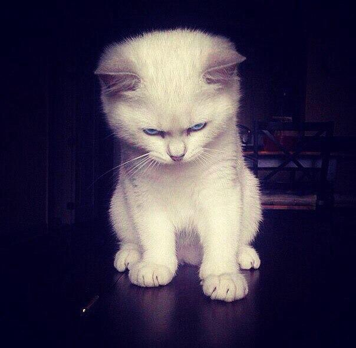

Welcome!

Меня зовут Мария Бондаренко.
И это мой первый сайт!
Я живу в городе Волгограде. По образованию - юрист. По профессии работала в суде и в частной фирме. Занимаалась профессионально спортом. А сейчас решила попробовать себя в верстке. И мне безумно нравится. Я хотела попробовать добавить сюда анимацию, больше элементов и стилей, но тороплюсь со сдачей макета, т.к. отстаю по графику. Прошу понять, принять и простить 🙂